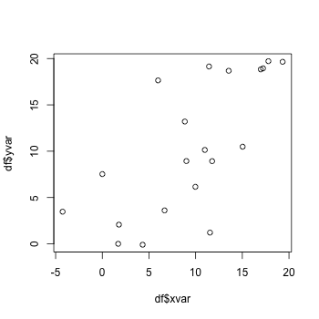
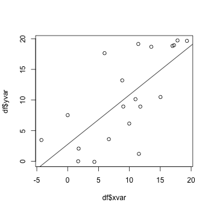
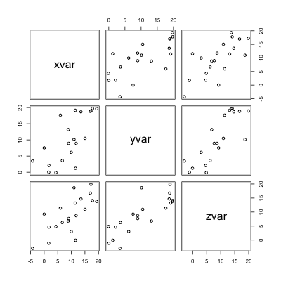
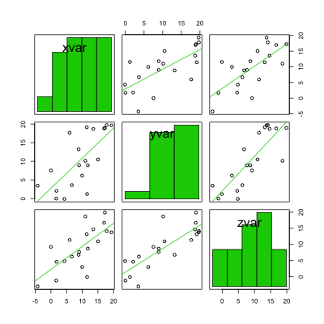

Scatterplot
Problem
You want to make a scatterplot.
Solution
Suppose this is your data:
set.seed(955) # Make some noisily increasing data df <- data.frame(xvar = 1:20 + rnorm(20,sd=3), yvar = 1:20 + rnorm(20,sd=3), zvar = 1:20 + rnorm(20,sd=3)) # xvar yvar zvar # -4.252354091 3.473157275 -2.97806724 # 1.702317971 0.005939612 -1.16183118 # ... # 17.793359218 19.718587761 14.11978650 # 19.319909163 19.647899863 13.76377001
Basic scatterplots
# Plot the points using the vectors xvar and yvar plot(df$xvar, df$yvar) # Add a regression line fitline <- lm(df$yvar ~ df$xvar) abline(fitline)
 
Scatterplot matrices
It is also possible to make a matrix of scatterplots if you would like to compare several variables.
See this for a way to make a scatterplot matrix with r values.
# A scatterplot matrix plot(df[,1:3]) # Another way of making a scatterplot matrix, with regression lines # and histogram/boxplot/density/qqplot/none along the diagonal library(car) scatterplotMatrix(df[,1:3], diagonal="histogram", smooth=FALSE)
 
To calculate the corresponding correlation matrix, see ../../Statistical analysis/Regression and correlation.
To visualize the correlation matrix, see ../Correlation matrix.